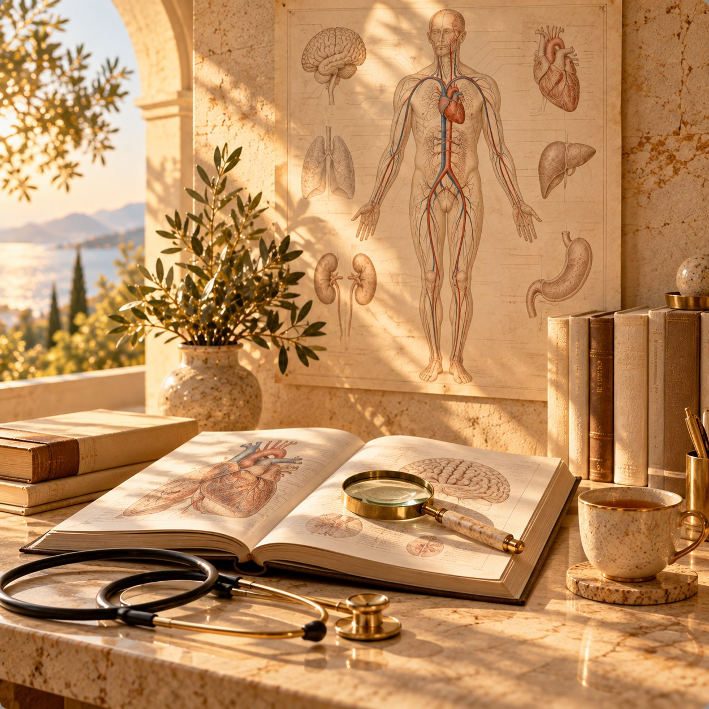

05
People & Place
場域與人物
聽見品牌背後的故事
透過醫療團隊、藝術創作者與品牌夥伴的分享，記錄作品的誕生、空間的設計與服務中的細心。
團隊專訪藝術與工藝空間故事品牌日常服務理念
Journal
從預防醫學到藝術與生活，分享 GAIAN 的觀察，
為您關心的議題帶來不同角度。
Why We Write
面對健康資訊，知道如何判斷，與獲得資訊同樣重要。
我們以清楚易懂的文字分享醫學知識、回應常見疑問，介紹研究進展時，也說明其依據、適用範圍與限制。
希望讓您看懂資訊背後的意義，知道何時值得進一步諮詢。
Categories
認識進展，也看見長遠影響
關注預防醫學、整合醫學與長壽科學，探討新觀念如何影響健康管理。
從日常習慣，找到調整的空間
分享睡眠、飲食、運動與壓力調適知識，讓改變有方法，也能考量個人的生活安排。
看懂症狀，了解診療選擇
透過醫師觀點，說明常見症狀、評估方式與診療原則，整理諮詢時值得提出的問題。

從肌膚到美感，了解選擇背後的知識
介紹肌膚保養、草本研發與醫學美容，認識不同方式的用途、適用條件與差異。
聽見品牌背後的故事
透過醫療團隊、藝術創作者與品牌夥伴的分享，記錄作品的誕生、空間的設計與服務中的細心。